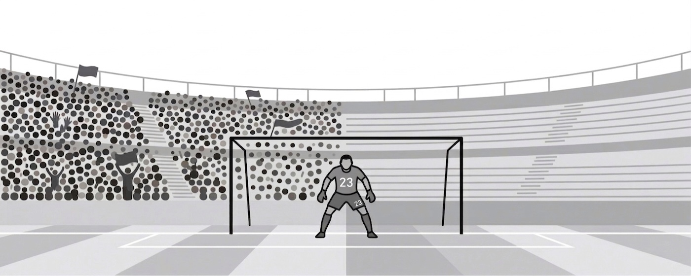

2025
Did Crowd Absence Reduce Home Advantage?
Used regression and statistical tests on 9,380 matches to estimate the impact of crowd absence during COVID-19, finding a measurable decline in home advantage (Premier League, 2000–2025).
